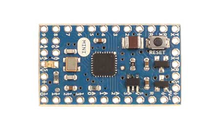

Arduino Mini
|  | 
|
| Arduino Mini Front without headers | Arduino Mini Rear |
Overview
NOTE: this product is currently retired and the documentation will not be kept up-to-date
The Arduino Mini is a small microcontroller board originally based on the ATmega168, but now supplied with the 328.(datasheet), intended for use on breadboards and when space is at a premium. It has 14 digital input/output pins (of which 6 can be used as PWM outputs), 8 analog inputs, and a 16 MHz crystal oscillator. It can be programmed with the USB Serial adapter or other USB or RS232 to TTL serial adapter.
The new Mini (revision 05) has a new package for the ATmega328, which enables all components to be on the top of the board. It also has an onboard reset button. The new version has the same pin configuration as revision 04.
Warning: Don't power the Arduino mini with more than 9 volts, or plug the power in backwards: you'll probably kill it.
Summary
| Microcontroller | ATmega328 |
| Operating Voltage | 5V |
| Input Voltage | 7-9 V |
| Digital I/O Pins | 14 (of which 6 provide PWM output) |
| Analog Input Pins | 8 (of which 4 are broken out onto pins) |
| DC Current per I/O Pin | 40 mA |
| Flash Memory | 32 KB (of which 2 KB used by bootloader) |
| SRAM | 2 KB |
| EEPROM | 1 KB |
| Clock Speed | 16 MHz |
| Length | 30 mm |
| Width | 18 mm |
Programming
The Arduino Mini can be programmed with the Arduino software (download). For details, see the reference and tutorials.
To program the Arduino Mini, you will need a USB Serial adapter or other USB or RS232 to TTL serial adapter. See the page on getting started with the Arduino Mini for instructions.
The ATmega328 on the Arduino Mini comes preburned with a bootloader that allows you to upload new code to it without the use of an in-system-programmer. The bootloader communicates using the original STK500 protocol (reference, C header files).
You can also bypass the bootloader and program the ATmega328 with ICSP (In-Circuit Serial Programming); see the page on bootloading the Mini for information on wiring up an ICSP header to the Mini and the programmer for instructions on using a programmer to upload a sketch.
Input and Output
Each of the 14 digital pins on the Mini can be used as an input or output. They operate at 5 volts. Each pin can provide or receive a maximum of 40 mA and has an internal pull-up resistor (disconnected by default) of 20-50 kOhms. Pins 3, 5, 6, 9, 10, and 11 can provide PWM output; for details see the analogWrite() function. If anything besides the Mini USB (or other) adapter is connected to pins 0 and 1, it will interfere with the USB communication, preventing new code from being uploaded or other communication with the computer.
The Mini has 8 analog inputs, each of which provide 10 bits of resolution (i.e. 1024 different values). Inputs 0 to 3 are broken out onto pins; input 4 to 7 require soldering into the provided holes. By default the analog inputs measure from ground to 5 volts, though is it possible to change the upper end of their range using the AREF pin and some low-level code.
See also the mapping between Arduino pins and ATmega168/328 ports.
Pinout
Note: the pinout changed from version 03 to version 04 of the Mini, please be sure you use the right diagram.
 Pin out of the Arduino Mini 03. (older versions are compatible, but missing the IO7 header at the top) |
 Pin out of the Arduino Mini 04 and 05. (Note that the ground pin on the left has moved down one pin.) |
Schematic
Schematic of the Arduino Mini 05
Schematic of the Arduino Mini 04
Schematic of the Arduino Mini 03
EAGLE files for the Arduino Mini 05
Gerbers for the Arduino Mini 04 (original board files were not done in Eagle)
Board files for the Mini USB adaptor
More Information
To get your Arduino Mini working, see this guide.
There's more information on the Arduino Mini in the playground.
Share


{kind=link}